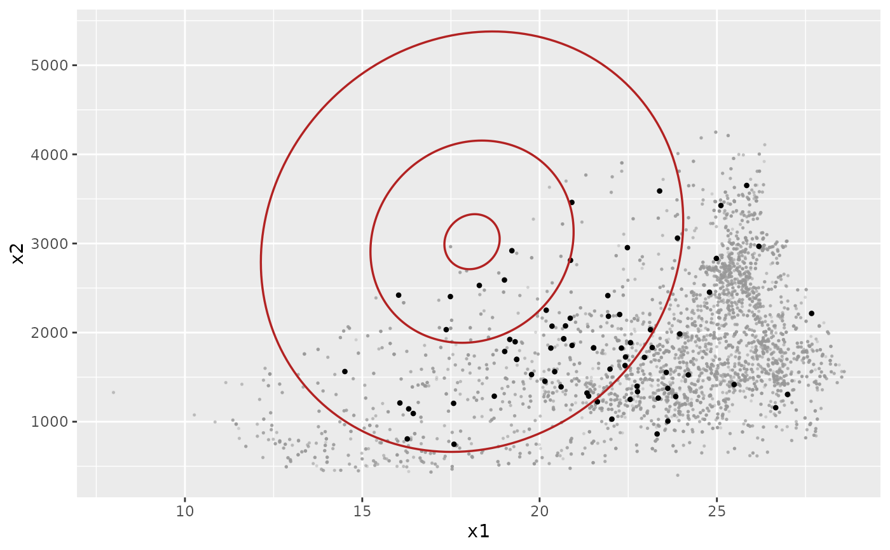

Niche-ellipse layer derived from a fitted nicher model
Source: R/geom_nicher.R
geom_nicher_ellipse.RdBuilds a self-contained ggplot2 layer that traces one or more
iso-suitability ellipses implied by a fitted 2-D nicher model.
The ellipse for level \(\alpha\) is the contour
\(S(x) = \alpha\), equivalently
\((x - \mu)^\top \Sigma^{-1} (x - \mu) = -2 \log \alpha\) when
level_type = "suitability", or the chi-squared confidence ellipse
\((x - \mu)^\top \Sigma^{-1} (x - \mu) =
\mathtt{qchisq}(\alpha, df = 2)\) when level_type = "chisq".
Arguments
- model
A
nicherobject withlength(model$var_names) == 2(or, for legacy fits withoutvar_names, a 2-D fit).- level
Numeric vector of contour levels in \((0, 1]\). Default
c(0.95, 0.5, 0.05)(paper-aligned: core / common / edge iso-suitability contours).- level_type
Either
"suitability"(the default) or"chisq". See Details.- n
Integer number of points around each ellipse. Default 200.
- linewidth
Path linewidth (or
sizeon ggplot2 < 3.4.0).- colour
Path colour.
- ...
Additional fixed parameters passed to
geom_path.
Details
For length(level) > 1 the layer carries one column level
grouping the closed ellipse paths so a single geom_path draws
them all. Map e.g. linetype = factor(level) downstream to
distinguish them visually.
Examples
# \donttest{
library(ggplot2)
fit <- optimize_niche(
env_occ = example_env_occ_2d,
env_m = example_env_m_2d,
num_starts = 5L
)
ggplot() +
geom_nicher_background(example_env_m_2d) +
geom_nicher_occ(example_env_occ_2d) +
geom_nicher_ellipse(fit)

# }